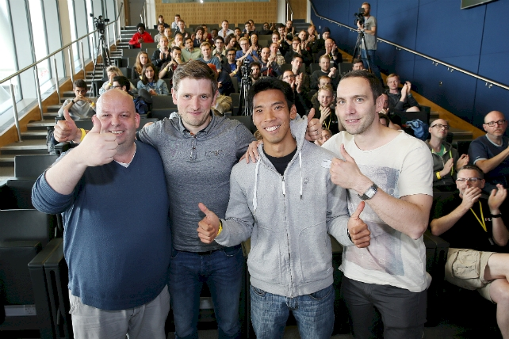
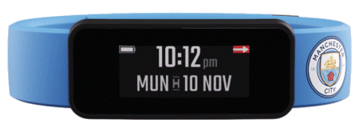

Get started with City Football
At City Football Group we live innovation. Our proven track record of embracing early-stage ideas and supporting the start-up community makes us an ideal partner for taking your idea to the next level.
Inspired by #HACKMANCITY

Today, Frontier Labs are a start-up success story working at the intersection of data science and human centred design. However, it was the success that founders Ben and Steven enjoyed in winning the first-ever football data hackathon, organised by City Football, in April 2016 that inspired them to go further and setup their own company. Since then, Frontier Labs have become regular collaborators with City Football Group and have been hired to work on complex data analytics problems relating to crowd behaviour and football performance.
Get smarter

In August 2018, after twelve months of development with its creators, Turnpike Group, Manchester City were the first to launch Fantom¸ a first of its kind smartband for sports fans. With City Fantom, Cityzens around the world receive the latest club news, match statistics and more, direct to their wrist.
We believe we are a global community, not just a football club. No matter where they are in the world, we want our Cityzens to actively participate in the club and be the first to know the most important news. By thinking differently and embracing new ideas, we think we can create an unparalleled fan experience.